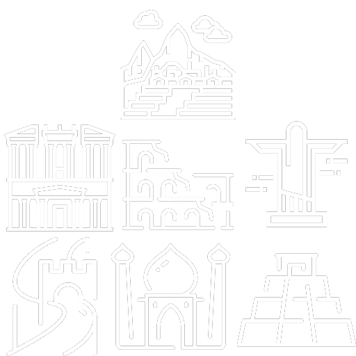

The New Seven Wonders
Of The World
The New 7 Wonders of the World was a campaign started in 2001 to choose The Wonders of the World from a selection of 200 existing monuments. The popularity poll via free Web-based voting and small amounts of telephone voting was led by Canadian-Swiss Bernard Weber and organized by the New 7 Wonders Foundation (N7W) based in Zurich, Switzerland. The poll was considered unscientific partly because it was possible for people to cast multiple votes. According to John Zogby, founder and CEO of the Utica, New York–based polling organization Zogby International, New 7 Wonders Foundation drove "the largest poll on record".
